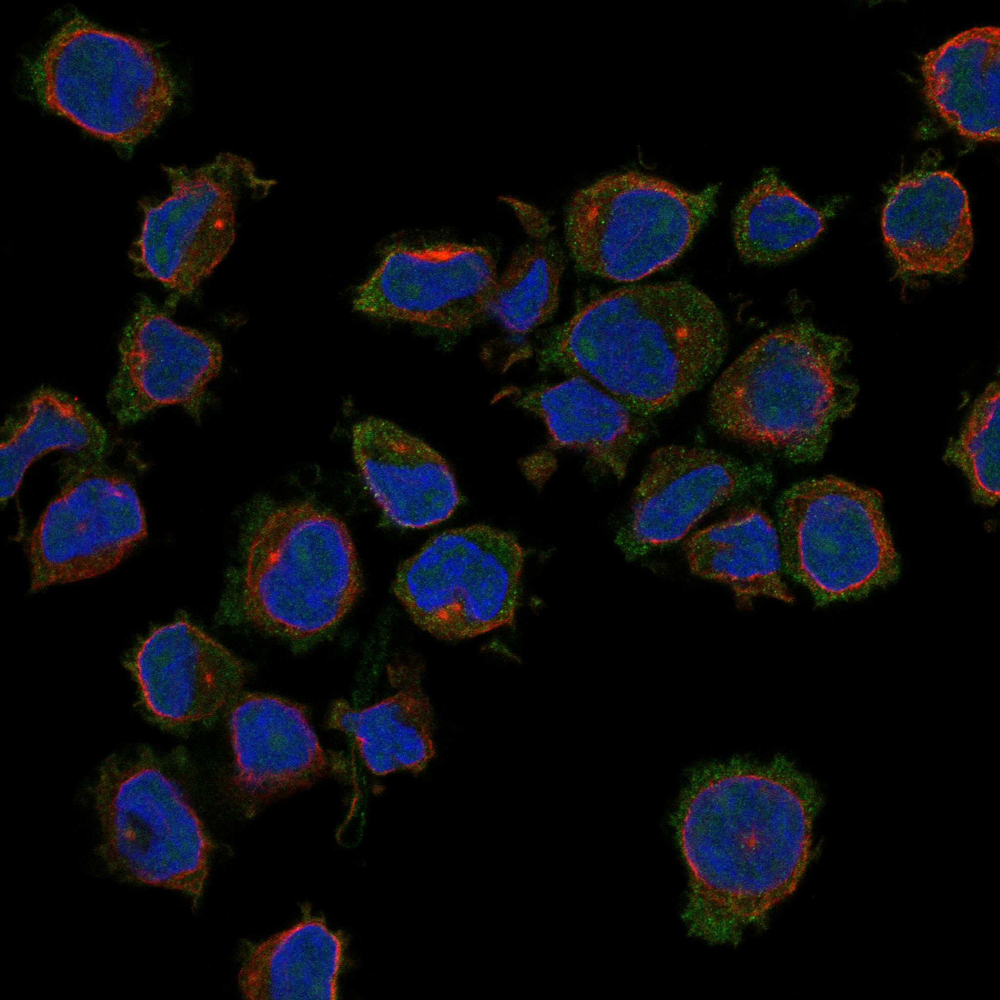
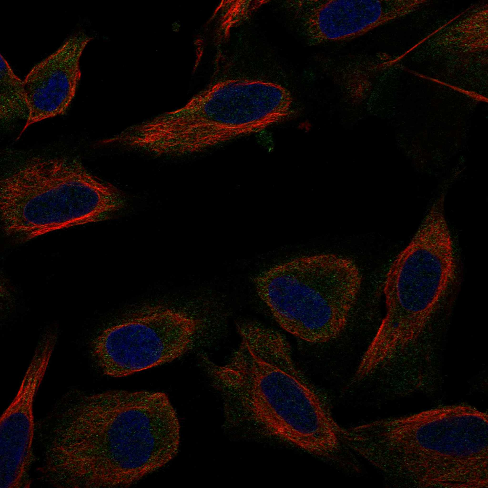
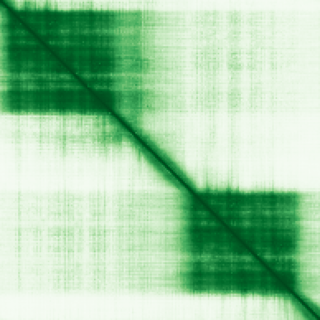

type: protein-evaluation gene: "CSRP3" date: 2026-05-30 tags: [protein-scout, nuclear-protein, evaluation] status: scored ---
CSRP3 核蛋白评估报告
1. 基本信息
| 项目 | 内容 |
|---|---|
| 基因名 / 别名 | CSRP3 / Cysteine and glycine-rich protein 3 |
| 蛋白大小 | 194 aa / 21.0 kDa |
| UniProt ID | P50461 |
| 评估日期 | 2026-05-30 |
IF 图像:  
2. 评分总览
| 维度 | 得分 | 满分 | 加权后 | 关键证据摘要 | |||
|---|---|---|---|---|---|---|---|
| 🔴 核定位特异性 | 4/10 | ×4 | 16 | Nucleus; Cytoplasm; Cytoplasm, cytoskeleton; Cytoplasm, myof... | |||
| 📏 蛋白大小 | 8/10 | ×1 | 8 | 194 aa / 21.0 kDa | |||
| 🆕 研究新颖性 | 4/10 | ×5 | 30 | PubMed 74 篇 | |||
| 🏗️ 三维结构 | 9/10 | ×3 | 27 | AlphaFold v6 pLDDT=73.4，PDB: 2O10, 2O13 | |||
| 🧬 调控结构域 | 7/10 | ×2 | 14 | InterPro: IPR001781 - Znf_LIM; Pfam: PF00412 - LIM; SMART: S | |||
| 🔗 PPI 网络 | 3/10 | ×3 | 9 | STRING 20 partners, IntAct 14 interactions | |||
| ➕ 互证加分 | — | max +3 | 1.5 | PDB+AF+STRING+IntAct cross-validation | |||
| 原始总分 | 97/183 | 94.0/183 | |||||
| 归一化总分 | 53.0/100 | 51.4/100 |
3. 详细分析
3.1 核定位证据
| 来源 | 定位 | 可信度 |
|---|---|---|
| UniProt | Nucleus; Cytoplasm; Cytoplasm, cytoskeleton; Cytoplasm, myofibril, sarcomere, Z ... | Swiss-Prot/TrEMBL |
| Protein Atlas (IF) | 暂无数据 | 暂无 HPA IF 数据 |
暂无数据（HPA IF 图像已本地嵌入。
结论: 核定位信号较弱，HPA 暂无 HPA IF 数据。
3.2 蛋白大小评估
评价: 大小基本合适，可用于常规实验。
3.3 研究现状
| 指标 | 数值 |
|---|---|
| PubMed 总数 | 74 |
| 研究方向 | 待补充关键文献摘要 |
评价: 有一定研究基础，但仍存在未探索的niche空间。
关键文献: 1. Adam MP et al. (1993). "Dilated Cardiomyopathy Overview". . PMID: 20301486 2. Adam MP et al. (1993). "Nonsyndromic Hypertrophic Cardiomyopathy Overview". . PMID: 20301725 3. Ingles J et al. (2019). "Evaluating the Clinical Validity of Hypertrophic Cardiomyopathy Genes". *Circ Genom Precis Med*. PMID: 30681346 4. Hespe S et al. (2025). "Genes Associated With Hypertrophic Cardiomyopathy: A Reappraisal by the ClinGen Hereditary Cardiovascular Disease Gene Curation Expert Panel". *J Am Coll Cardiol*. PMID: 39971408 5. Funahashi Y et al. (2025). "Cardiac LIM Protein, Kidney Fibrosis, and Vascular Change after Acute Cardiorenal Syndrome". *J Am Soc Nephrol*. PMID: 40536823
3.4 三维结构分析
| 指标 | 数值 |
|---|---|
| AlphaFold 版本 | v6 |
| AlphaFold 平均 pLDDT | 73.4 |
| 高置信度残基 (pLDDT>90) 占比 | 11.3% |
| 置信残基 (pLDDT 70-90) 占比 | 52.1% |
| 有序区域 (pLDDT>70) 占比 | 63.4% |
| 可用 PDB 条目 | 2O10, 2O13 |
PAE 图:

评价: PDB 实验结构（2O10, 2O13）+ AlphaFold 高质量预测（pLDDT=73.4），结构可信度高。
3.5 结构域分析
| 来源 | 结构域 |
|---|---|
| InterPro/Pfam | InterPro: IPR001781 - Znf_LIM; Pfam: PF00412 - LIM; SMART: SM00132 - LIM |
染色质调控潜力分析: 存在注释结构域：InterPro: IPR001781 - Znf_LIM; Pfam: PF00412 - LIM; SMART: S...。新颖蛋白基线不扣分。
3.6 PPI 网络
STRING 预测互作 (combined score >0.4):
| Partner | Score | 功能类别 | 调控相关？ |
|---|---|---|---|
| TCAP | 0.998 | — | — |
| TTN | 0.995 | — | — |
| ACTN2 | 0.971 | — | — |
| MYH7 | 0.963 | — | — |
| MYL2 | 0.956 | — | — |
| MYOZ2 | 0.952 | — | — |
| MYBPC3 | 0.94 | — | — |
| MYL3 | 0.93 | — | — |
| MYL1 | 0.901 | — | — |
| XIRP2 | 0.881 | — | — |
实验验证互作 (IntAct):
| Partner | 方法 | PMID | 功能类别 | 调控相关？ | ||||||||||||||
|---|---|---|---|---|---|---|---|---|---|---|---|---|---|---|---|---|---|---|
| intact:EBI-298451 | ensembl:ENSMUSP00000094873.3 | ensembl:ENSMUSP00000094874.3 | — | — | — | — | ||||||||||||
| intact:EBI-912547 | uniprotkb:Q13645 | intact:EBI-1052757 | uniprotkb:B7Z5T4 | uniprotkb:B7Z793 | uniprotkb:O95212 | uniprotkb:Q13230 | uniprotkb:Q5JXI7 | uniprotkb:Q5M7Y6 | uniprotkb:Q6IB30 | uniprotkb:Q9NZ40 | uniprotkb:Q9UKZ8 | uniprotkb:Q9Y630 | ensembl:ENSP00000377710.2 | ensembl:ENSP00000498684.1 | — | — | — | — |
| intact:EBI-306928 | uniprotkb:Q53TE0 | uniprotkb:Q9BS44 | uniprotkb:B2RAJ4 | uniprotkb:B7Z483 | uniprotkb:B7Z7R3 | uniprotkb:B7Z907 | ensembl:ENSP00000331775.6 | ensembl:ENSP00000376987.1 | ensembl:ENSP00000511981.1 | ensembl:ENSP00000511984.1 | — | — | — | — | ||||
| intact:EBI-5658719 | uniprotkb:Q9P131 | intact:EBI-9540516 | uniprotkb:S4S7M7 | ensembl:ENSP00000265968.3 | ensembl:ENSP00000431813.1 | ensembl:ENSP00000497388.1 | — | — | — | — | ||||||||
| intact:EBI-20565907 | ensembl:ENSMUSP00000105350.2 | — | — | — | — |
已知复合体成员 (GO Cellular Component):
- 无 GO-CC 注释
PPI 互证分析:
- STRING + IntAct 共同确认: 0
- 仅 STRING 预测: 20
- 仅 IntAct 实验: 14
- 调控相关比例: 0 / 20 = 0%
评价: STRING 20 个预测互作，IntAct 14 个实验互作。调控相关配体占比 0%。
3.7 多库互证
| 维度 | 来源 | 结果 | 是否一致 |
|---|---|---|---|
| 三维结构 | AlphaFold pLDDT=73.4 + PDB: 2O10, 2O13 | pLDDT=73.4, v6 | 预测+实验 |
| 定位 | UniProt + HPA | Nucleus; Cytoplasm; Cytoplasm, cytoskeleton; Cytop | 待确认 |
| PPI | STRING + IntAct | 20 + 14 interactions | 数据充分 |
互证加分明细:
- PDB + AlphaFold 双源验证: +0.5
- 多库定位一致: +0
- STRING + IntAct 双源验证: +0.5
- 结构域 + AlphaFold 质量: +0.5
- PDB 多条目覆盖: +0
总分: +1.5 / max +3
4. 总体评价
推荐等级: ⭐⭐⭐
核心优势: 1. CSRP3 — Cysteine and glycine-rich protein 3，有一定研究基础，但仍存在未探索的niche空间。 2. 蛋白大小194 aa，大小基本合适，可用于常规实验。
风险/不确定性: 1. 已有一定研究，需确认独特研究角度 2. 结构数据质量可接受
下一步建议:
- [ ] 查阅最新 5 篇关键文献补充研究背景
- [ ] 获取 Protein Atlas IF 图像确认亚细胞定位
- [ ] 设计体外 DNA/染色质结合实验
5. 数据来源
- UniProt: https://www.uniprot.org/uniprotkb/P50461
- PubMed: https://pubmed.ncbi.nlm.nih.gov/?term=CSRP3
- AlphaFold: https://alphafold.ebi.ac.uk/entry/CSRP3
PPI 网络（三源综合）
| Partner | Source | Score/Evidence |
|---|---|---|
| 无记录 | — | — |
IntAct 有限记录。无 BioGrid 补充数据。
PAE 图像已获取。结构判断基于 AlphaFold pLDDT 统计。
<!-- DOMAIN_HUMANPPI_REPAIR_START -->
Domain/SMART 与 humanPPI 补充（2026-06-07）
SMART / UniProt domain
| Source | Data | ||
|---|---|---|---|
| UniProt | P50461 | ||
| SMART | SM00132; | ||
| UniProt Domain [FT] | DOMAIN 10..61; /note="LIM zinc-binding 1"; /evidence="ECO:0000255\ | PROSITE-ProRule:PRU00125"; DOMAIN 120..171; /note="LIM zinc-binding 2"; /evidence="ECO:0000255\ | PROSITE-ProRule:PRU00125" |
| InterPro | IPR001781; | ||
| Pfam | PF00412; |
humanPPI / HPA Interaction
Source: https://www.proteinatlas.org/ENSG00000129170-CSRP3/interaction
| Partner | Datasets | AF3/HPA structure |
|---|---|---|
| ACTN2 | Intact | false |
| GNB2 | Bioplex | false |
| HDAC4 | Biogrid | false |
| HTT | Intact | false |
| MYOD1 | Biogrid | false |
| SMPDL3B | Bioplex | false |
| TCAP | Intact | false |
<!-- DOMAIN_HUMANPPI_REPAIR_END -->